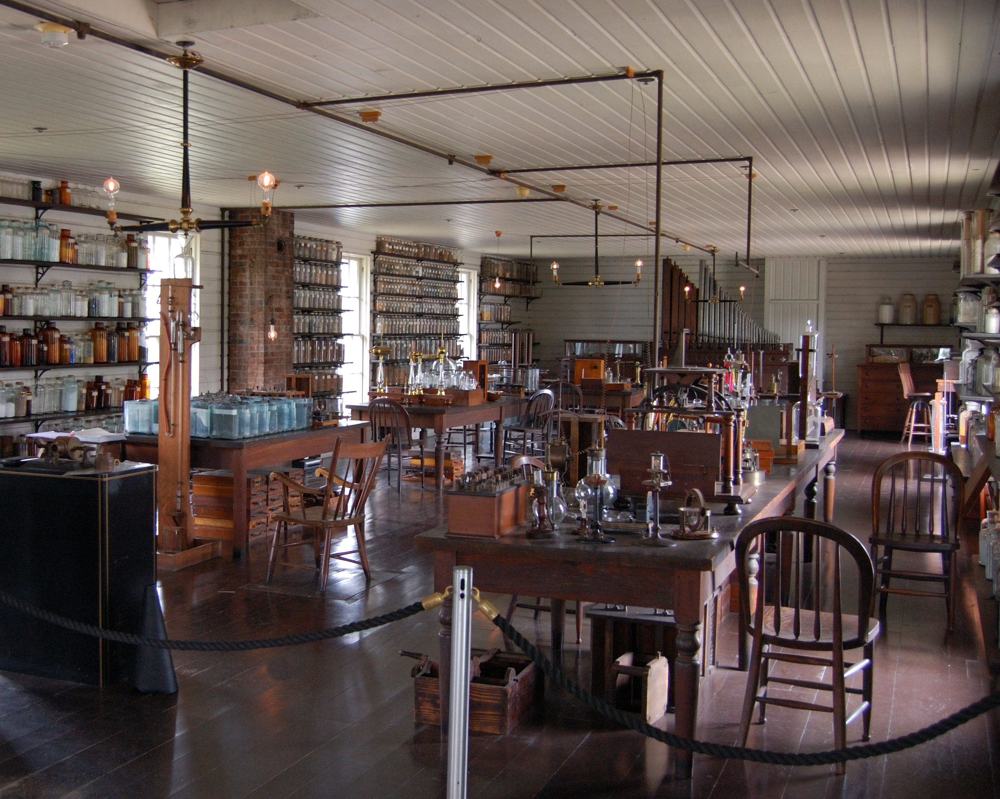

Menlo Park
Edison's major innovation was the establishment of an industrial research lab in 1876. It was built in Menlo Park, a part of Raritan Township (now named Edison Township in his honor) in Middlesex County, New Jersey, with the funds from the sale of Edison's quadruplex telegraph. After his demonstration of the telegraph, Edison was not sure that his original plan to sell it for $4,000 to $5,000 was right, so he asked Western Union to make a bid. He was surprised to hear them offer $10,000 ($226,000 in today's dollars[28]), which he gratefully accepted. The quadruplex telegraph was Edison's first big financial success, and Menlo Park became the first institution set up with the specific purpose of producing constant technological innovation and improvement. Edison was legally attributed with most of the inventions produced there, though many employees carried out research and development under his direction. His staff was generally told to carry out his directions in conducting research, and he drove them hard to produce results.
William Joseph Hammer, a consulting electrical engineer, started working for Edison and began his duties as a laboratory assistant in December 1879. He assisted in experiments on the telephone, phonograph, electric railway, iron ore separator, electric lighting, and other developing inventions. However, Hammer worked primarily on the incandescent electric lamp and was put in charge of tests and records on that device (see Hammer Historical Collection of Incandescent Electric Lamps). In 1880, he was appointed chief engineer of the Edison Lamp Works. In his first year, the plant under general manager Francis Robbins Upton turned out 50,000 lamps. According to Edison, Hammer was "a pioneer of incandescent electric lighting". Frank J. Sprague, a competent mathematician and former naval officer, was recruited by Edward H. Johnson and joined the Edison organization in 1883. One of Sprague's contributions to the Edison Laboratory at Menlo Park was to expand Edison's mathematical methods. Despite the common belief that Edison did not use mathematics, analysis of his notebooks reveal that he was an astute user of mathematical analysis conducted by his assistants such as Francis Robbins Upton, for example, determining the critical parameters of his electric lighting system including lamp resistance by an analysis of Ohm's Law, Joule's Law and economics.
William Joseph Hammer, a consulting electrical engineer, started working for Edison and began his duties as a laboratory assistant in December 1879. He assisted in experiments on the telephone, phonograph, electric railway, iron ore separator, electric lighting, and other developing inventions. However, Hammer worked primarily on the incandescent electric lamp and was put in charge of tests and records on that device (see Hammer Historical Collection of Incandescent Electric Lamps). In 1880, he was appointed chief engineer of the Edison Lamp Works. In his first year, the plant under general manager Francis Robbins Upton turned out 50,000 lamps. According to Edison, Hammer was "a pioneer of incandescent electric lighting".[30] Frank J. Sprague, a competent mathematician and former naval officer, was recruited by Edward H. Johnson and joined the Edison organization in 1883. One of Sprague's contributions to the Edison Laboratory at Menlo Park was to expand Edison's mathematical methods. Despite the common belief that Edison did not use mathematics, analysis of his notebooks reveal that he was an astute user of mathematical analysis conducted by his assistants such as Francis Robbins Upton, for example, determining the critical parameters of his electric lighting system including lamp resistance by an analysis of Ohm's Law, Joule's Law and economics.